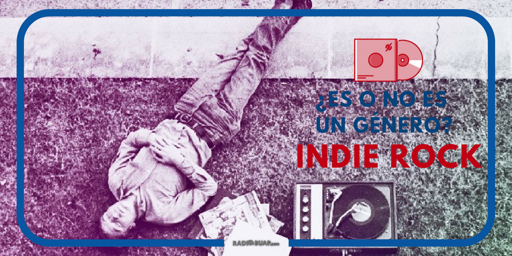

INDIE ROCK Y ALTERNATIVO: ¿GÉNEROS MUSICALES O SOCIALES?
 Si te preguntara por bandas de Indie Rock probablemente dirías ejemplos como: The Strokes, Tame Impala, My Bloody Valentine, Artic Monkeys y Arcade Fire; incluso si llegas a escuchar una canción de ellos dirías “suena a indie rock” (porque de hecho, lo son). Sin embargo, te sorprenderías de que cada banda mencionada anteriormente, pertenece a otro subgénero también, (Garage-rock, neo-psicodelia, Shoegazing, Post-Punk Revival y Chamber-Pop respectivamente). Cada subgénero tiene sus propias características musicales y esto explica el porqué de que las bandas de Indie Rock suenen tan distinto entre sí.
¿A qué suena el indie rock entonces? Bueno, esa fue la pregunta que me motivó a escribir este artículo y es que después de una pequeña investigación me surgió una teoría: El indie rock NO es un género musical. Antes de que salga alguna objeción, dejen que me explique:
El indie rock siempre ha sido un tema difícil, muchos críticos de música lo dicen, esto debido a la aplastante variedad de subgéneros que lo conforman, llegando incluso a parecer que estos no derivan del mismo tronco y estéticamente hablando es cierto, el indie rock (como tal) no posee alguna característica musical definida, sociales tenemos varias, la más famosa es la de no perseguir el éxito comercial aliándose con una gran disquera, ir en contra de los estándares que tenía la música (y que, en la mayoría de los casos, los sigue teniendo en la actualidad).Pero esto sigue siendo una característica social, no musical. Podríamos decir que es un género musical sólo porque desciende de otro que sería el rock alternativo. Sin embargo éste no es considerado por muchos como un género musical, sino como una contracultura. Déjenme explico esto último.
Un género musical siempre debe contar con características estéticas (musicales) y sociales. Sabemos que el alternativo surge en oposición a la forma convencional de hacer música y se dice que esa es una característica tanto social como estética. Sin embargo, podemos observar que existen varios grupos de alternativo que sí hacen música de manera convencional (Datsuns, Futureheads, Spaceman3) y que hay varios géneros musicales (New Wave, Fusion, Rock progresivo) que no componen de la forma tradicional y no son considerados alternativo. Por estas razones nos damos cuenta que su única característica estética no es del todo obligatoria y si dijésemos que el rock alternativo se caracteriza por componer de manera libre (con o sin alguna regla específica) estaríamos hablando que abarca todo el rock, cosa que sería una mentira. Por lo tanto, no puede ser considerado un género musical.